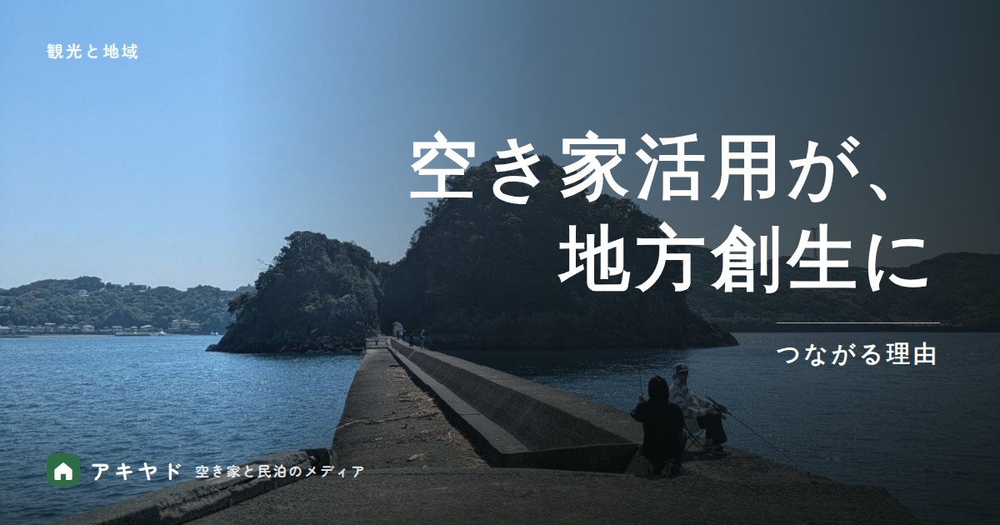

空き家活用はなぜ地方創生につながる？宿への再生がもたらす4つの循環
公開日
更新日
読了目安 約5分
執筆：アキヤド編集部
監修：石原 佑真

空き家を宿に再生すると、泊まる人の消費・地元への仕事・関係人口・まちなみの継承という4つの循環が生まれます。下田の運営と焼津の計画をもとに、循環を回すための3つの条件を整理します。
この記事のポイント
- 全国の空き家は約900万戸、空き家率は13.8%です（2023年）。
- うち約386万戸は、貸しにも売りにも出ていない空き家です（賃貸用・売却用・二次的住宅を除く）。宿の候補になり得ます。
- 宿に再生すると、4つの循環が生まれます。①泊まる人の消費 ②地元への仕事 ③関係人口 ④まちなみの継承。
- 下田の宿では、清掃を近隣の個人事業主・複業人材に頼んでいます。仕事の循環は、発注先で決まります。
- 焼津・鰯ヶ島では、食事を出さない泊食分離の宿を計画しています。町の食堂や魚屋に、消費が残る形です。
空き家は、いま全国にどれだけあるのか？
全国の空き家は2023年に約900万戸、空き家率は13.8%で、いずれも過去最高です。
約900万戸空き家数2023年・過去最高
13.8%空き家率2023年・過去最高
約386万戸貸しにも売りにも出ていない賃貸用・売却用・二次的住宅を除く
総務省「令和5年住宅・土地統計調査」では、空き家は9,001,600戸です。このうち、貸しにも売りにも出ていない空き家（賃貸用・売却用・二次的住宅を除く）は3,856,000戸です。
※ 出典：総務省「令和5年住宅・土地統計調査」（2023年10月1日時点。e-Stat 統計表ID 0004021421）。標本調査の推計値で、端数を丸めています。
人口も減っていきます。国立社会保障・人口問題研究所の推計（令和5年推計）では、総人口は2070年に約8,700万人になります。使われない家は、今後も増えると見込まれます。
放置が続くと、地域の負担になります。国土交通省によると、「管理不全空家」や「特定空家」への指導に従わず勧告を受けると、固定資産税の住宅用地特例が受けられなくなります。一方で空き家は、すでに建っていて、地域の歴史や暮らしが刻まれた資源でもあります。
数字の詳しい読み方は、「データで見る日本の空き家」で説明しています。
宿に再生すると、地域にどんな循環が生まれるのか？
空き家を宿にすると、泊まる人の消費、地元への仕事、関係人口、まちなみの継承という4つの循環が生まれます。
空き家の再生から始まる、地域の循環
人とお金がめぐる
- 01宿に再生
- 02旅行者が来る
- 03地域で消費
- 04仕事が育つ
循環 1泊まる人の消費
夕食・朝食・散策・買い物と、地域でお金を使う時間が長くなります。
循環 2地元への仕事
清掃・修繕・工事・ゲスト対応を、地元の人や事業者に頼みます。
循環 3関係人口
暮らすように過ごした人が再訪し、町の人と顔見知りになります。
循環 4まちなみの継承
古い家を壊さず使い続けると、建築と職人の技が残ります。
横にスワイプで続きを見られます
仕事の循環は、発注先で決まります。創業メンバーが下田で宿を開業したとき、利用した自治体の補助金の要項には、市内の工務店との契約が求められていました。清掃は、近隣の個人事業主・複業人材に頼んでいます。
消費の循環は、宿の設計で決まります。焼津・鰯ヶ島で準備している宿は、食事を出さない泊食分離で、町の食堂・魚屋・商店を使ってもらう計画です。
関係人口とは、移住した定住人口でも、観光に来た交流人口でもない、地域と多様に関わる人々のことです（総務省）。国の観光立国推進基本計画（2026年3月）も、関係人口の創出や二地域居住の促進、古民家などの歴史的建築物を宿泊施設として使う取組を施策に挙げています。
お金の流れの詳しい仕組みは、「宿が地域にお金を落とす仕組み」で説明しています。
循環を回すには、何を決めておけばよいのか？
決めておくのは、コンセプト、地域の人との連携、少人数で続く運営の3つです。下田の宿（RIVIA&CO.が運営する施設の一例）での経験をもとに説明します。
- 日常を体験できるコンセプト：下田の宿は、欧米を中心とした外国人の長期滞在者を想定してつくりました。物件は駅から徒歩10分ほどで、飲食店・コンビニ・スーパーが徒歩圏にあります。ゲストのレビューの一つです。「海も近く初日の出も見ることができ、スーパーも近かったのでとても便利で快適な時間を過ごすことができました！」（Airbnbゲスト・数泊・2026年1月）
- 地域の人との連携：清掃は近隣の個人事業主・複業人材に依頼しました。手順書をつくり、現地で一緒に清掃し、完了後は写真で品質を確認します。開業2か月目には、運営者が行かなくても回る体制になりました。
- 少人数で続く運営：スマートロックのセルフチェックイン、日英の定型文、過去の質問を読み込ませたAIチャットボットで、現地へ行くのは月1回程度です。
近所との接点にも気を配りました。Wi-Fi工事の車両の駐車について、近隣から指摘を受けたことがあります。工事・清掃・ごみ・駐車は、近隣への影響を先に洗い出しておく項目です。
遠隔での運営は、「遠方の物件でも宿を運営できる？」で説明しています。
焼津・鰯ヶ島では、循環をどう設計しているのか？
焼津の宿は、観光地を巡る拠点ではなく、町の日常に溶け込む宿として準備しています。2026年末の開業予定で、まだ運営の実績はありません。
下田（運営中）
場所下田市の旧町内
形態一棟貸し
ゲスト欧米の長期滞在が中心
焼津（開業予定）
場所鰯ヶ島（浜通りの南端）
形態約40㎡の平屋・最大4名
食事なし（泊食分離）
鰯ヶ島は、駿河湾沿いに南北約1.5kmの集落が続く「浜通り」の南端にあり、焼津の水産業の発祥の地と言われています。宿では、貸し出し自転車で浜通りや焼津漁港へ出かけてもらいます。
運営の方針は、「よそ者」を受け入れてきた町の歴史を尊重し、近所の日常を崩さない形で営むことです。清掃は地元の清掃パートナーに、食事は町の店に任せます。創業メンバーは、移住者を増やすことだけが答えではないと考えます。住んでいなくても、何度も訪れてお金を使い、町の人と顔見知りになる「関係人口」が増えれば、町に人と新しい挑戦が入ります。
焼津の計画は、「静岡市・焼津の空き家は宿になる？」で詳しく紹介しています。
まとめ：空き家は、使い方を決めれば地域の循環の起点になる
空き家は、放置すれば地域の負担になりますが、宿に再生して仕事と消費を地域に残す設計にすれば、4つの循環の起点になります。
鍵は、発注先・食事・運営の担い手を、地域の側に置くことです。人口減少が避けられない地方で、今ある建物を使って人の流れをつくる現実的な方法の一つだと考えます。
よくある質問
Q空き家の活用はなぜ地方創生につながるのですか？
A空き家を宿などに再生すると、旅行者の消費、清掃や工事など地元への仕事、地域と継続的に関わる関係人口、まちなみの継承といった循環が生まれるためです。放置すれば負担になる建物が、人と経済の流れをつくる拠点に変わります。
Q「関係人口」とは何ですか？
A総務省が提唱する考え方で、移住した「定住人口」でも、観光に来た「交流人口」でもない、地域と多様に関わる人々を指します。地域づくりの担い手として期待されています。
Q空き家の改修に使える自治体の支援制度はありますか？
Aあります。静岡県内では、河津町の空き家活用支援補助金（空き家バンク登録物件の改修は、工事費の20%・上限20万円）と、西伊豆町の空き家改修等補助金（改修工事費の1/2・最大50万円）があります（2026年10月時点）。空き家バンクへの登録が条件の制度が多く、宿泊施設への改修が対象かは制度ごとに異なります。
Q宿にすると、近所に迷惑がかかりませんか？
A騒音・ごみ・駐車・工事の車両などで、近隣に影響が出ることがあります。下田の宿でも、Wi-Fi工事の車両の駐車について近隣から指摘を受けました。焼津の宿は、近所の日常を崩さない形で営む方針です。ルールの決め方は「民泊の近隣トラブルを防ぐには？」で説明しています。
参考資料
- 総務省「令和5年住宅・土地統計調査」（2024年公表。e-Stat）
- 国立社会保障・人口問題研究所「日本の将来推計人口（令和5年推計）」
- 総務省「関係人口ポータルサイト」
- 観光庁「観光立国推進基本計画（第5次）」（2026年3月27日閣議決定）
- 国土交通省「空き家対策 特設サイト」（住宅用地特例と勧告）
- 河津町「空き家活用支援補助金」、西伊豆町「空き家改修等補助金」（各町の公式ページ）
※ 本記事の数値・制度は公開日時点で公表されている資料にもとづきます。最新の情報は各機関の発表をご確認ください。